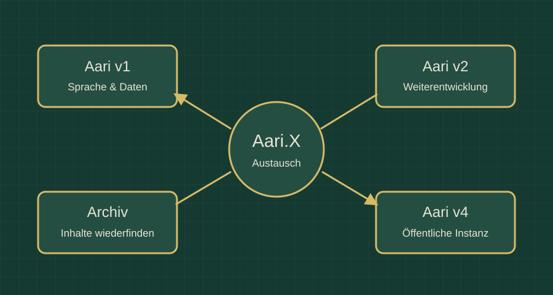

BSVRB / Aarulon / Aari
Aarulon / Aari
Sprache. Gedächtnis. Austausch.
Aarulon ist ein persönliches Assistenz- und Entwicklungsprojekt. Es verbindet Sprach- und Datenarbeit mit dem Ziel, eigene Inhalte, Projekte und frühere Erkenntnisse wiederzufinden und weiterzuentwickeln.

Aari und Aari.X
Aari.X steht für «Aari Exchange»: Austausch und Verbesserung. In der Projektstruktur ist Aari v1 für Sprache und Daten vorgesehen, Aari v2 als Weiterentwicklung und Aari v4 als öffentliche Instanz.
Ein Gedächtnis für die eigene Arbeit
Das AariMemory-Konzept bündelt Projektinhalte, Chat-Auszüge und Dateien. Gesuchte Zusammenhänge sollen wieder auffindbar werden, statt bei jedem neuen Anlauf erneut aufgebaut zu werden.
Lokale Geräte verbinden
Die direkte Verbindung zwischen Smartphone und Raspberry Pi gehört zur Entwicklung. Sie dient dem Austausch zwischen mobiler Oberfläche, lokalem Archiv und Verarbeitung.
Projekt und Webdemo
Die auf dieser Website vorhandene Chatoberfläche ist ein einzelner Prototyp. Sie bildet den grösseren Aarulon-Ansatz mit Archiv, Austausch und mehreren Instanzen nicht vollständig ab.